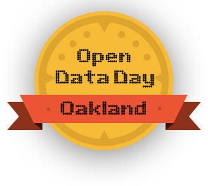

February 23, 2013, Oakland
81st Avenue Oakland Public Library.
Everyone welcome.
Agenda
10am
Welcome, intros
10:20
OpenData reviews
10:40
Ideas, teams
Break
11:00
Session 1
12:00
Livestream from Chicago
1:00
Lunch (Tina Tamales)
2:00
Session 2
3:30
Session 3
Break
5:00
Demos & Ignites & Needs
5:20
Close
Resources for the day of the hackathon
Ideas for projects on Engage Oakland
Activity suggestions from Code for America
Open Oakland's data portal
: A good source of data, a good place to store data you liberate or produce.
The City of Oakland's data portal
Alameda County's data portal
#openoakland and #codeacress are IRC channels on
Freenode
Open Oakland on flickr